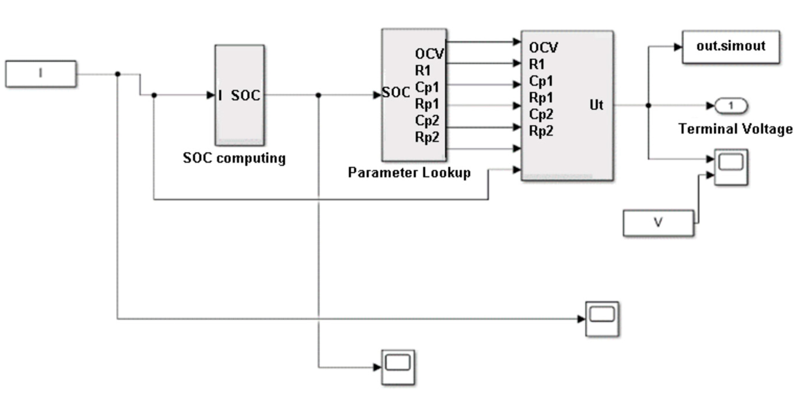

Download
Abstract
Lithium-ion batteries (LIB) proved over time to be one of the best choices among rechargeable batteries. Their small size, high energy density, long life, and low maintenance need make them a prominent candidate for the role of the most widespread energy storage system. They have the potential to monopolize the green technology sector. An accurate definition of the parameters defining the behaviour of the battery in different operating conditions is thus essential, as their knowledge proves crucial in certain fields such as those that involve electric vehicles. This paper proposes the estimation of the values of the parameters of the Thévenin equivalent circuit of a LIB commercial cell. Experimental data obtained through constant current charge/discharge cycles are analysed through a Simulink model, and results are obtained as a function of the state of charge (SOC) for a fixed and controlled temperature value. The results achieved with the proposed model can monitor the salient parameters of the equivalent circuit with an error between 7 and 10%.
Figure 2: Simulation model for the second order RC circuit.

Citation
Barletta, G.; DiPrima, P.; Papurello, D. Thévenin’s Battery Model Parameter Estimation Based on Simulink. Energies 2022, 15, 6207. https://doi.org/10.3390/en15176207
@Article{en15176207,
AUTHOR = {Barletta, Giulio and DiPrima, Piera and Papurello, Davide},
TITLE = {Thévenin’s Battery Model Parameter Estimation Based on Simulink},
JOURNAL = {Energies},
VOLUME = {15},
YEAR = {2022},
NUMBER = {17},
ARTICLE-NUMBER = {6207},
URL = {https://www.mdpi.com/1996-1073/15/17/6207},
ISSN = {1996-1073},
DOI = {10.3390/en15176207}
}